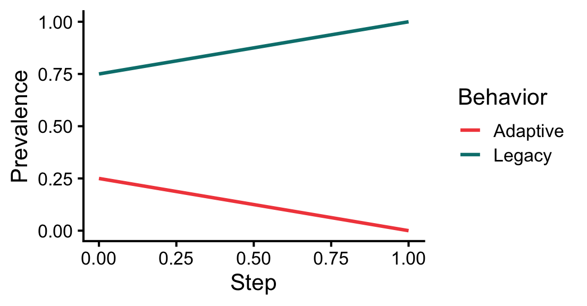

[1] "character"[1] "character"This vignette introduces agent-based modeling in socmod starting with basic functional and object-oriented programming in R. It therefore builds on an assumed knowledge of R basics which can be gained by studying, for example, Hands-On Programming with R or other basic R tutorial introductions.
To model social behavior it helps to have intuitive software tools grounded in an empirically-motivated, self-consistent scientific theory. socmod provides those tools, but to put it to best use it’s helpful to know how it works, especially for people used to using R in a data science context. Many of the same tools are transferable, especially declarative/functional programming, as is used and encouraged by the tidy approach in R for Data Science.
To create simulations that generate social behavior we have to go beyond tabular representations of the world to more complex representations of people and their interactions that can be measured. These measurements are recorded in a standard tabular format, e.g., CSV, which can then be analyzed using tidy/R for Data Science strategies.
In agent-based modeling, we create software representations of simulated people, i.e. agents, or other interacting entities, including the agents’ environment. Object-oriented programming is the natural choice for software design in this case because it provides a structure for defining custom objects like socially interacting agents. An object is one bit of data that could be a number or character type, but could also be something more complicated. In object-oriented programming we define custom classes that specify various data fields and function methods for maintaining and modifying the state of objects. The fields and methods of a class therefore are sets of related data and functions to represent things in the world.
To summarize, objects are a way to track and modify the state of different software entities. We can create simulations of real-world systems by defining custom object types called classes whose state and behaviors are modeled on relevant real-world features and behaviors.
In socmod, we define custom R objects for agent-based models of social behavior using the R6Class method that creates a new object type, i.e., a new class. We use tidy-style functional programming where helpful to represent model features and dynamics.
In the remainder of this vignette, I will first review variable assignment and data structures in R including vectors, lists, data.frames, and tibbles. We then review relevant topics in functional programming, then demonstrate how to create custom classes in R with the library R6. This tutorial then closes with a demonstration of a simple four-agent agent-based model of social behavior, kept simple to highlight the functional and object-oriented design patterns in socmod, representing Agent, an AgentBasedModel, and Trialclasses defined using the R6Class function.
In R, there is a hierarchy of data collection types that are necessary to know about for functional programming, which often involves applying a function across every element of a collection of data. Data collections include vectors, lists, data.frames, and tibbles, which we’ll cover here.
In computer science, a collection is an abstract data type that organizes and stores instances of other data types. In R, the most basic data types are numbers (e.g., double or integer) and text, whose data type is character in R whether it’s a single character or several:
R vectors are defined using the c() function, e.g., vec <- c(0, 0, 1). The data type of all vector elements must be the same. This is enforced by R coercing data to different types, for example:
We index vectors using single square brackets, with R indexing starting from 1:
If one wants to keep elements of different types in a single collection, use the R list:
Note the visual representation has changed on printout. We now need to use double-square brackets to index list elements themselves:
print(l[[3]])[1] "yo"If we leave off one of the square brackets we effectively get a sub-list with just one element:
print(l[3])[[1]]
[1] "yo"This is useful if you want to create a new sub-list with more than one element:
Named lists are the primary key-value store in R, just like dict in Python. It allows us to label entries of the list and access them using double square brackets with the character name or using the $ access operator:
tibble (and data.frame)
Both the tibble and data.frame classes represent tabular data, meaning data that can be represented in table format, e.g., in comma- or tab-separated value format. There are some subtle differences listed below, but we’ll use tibble for representing our tables.
Tibbles are like fancy lists that have special properties that make data manipulation more efficient. The details of how this works aren’t super important at this point. The important thing to know is how one can initialize tibbles and access tibble columns similarly to lists, as shown in the following example:
Using tibbles ensures that data manipulation and analysis using the tidyverse will work as expected. For example, the tidyverse provides functions for analyzing different groups of data within a larger dataset. This is a common data analysis pattern called split-apply-combine, which in the tidyverse translates to group-by and summarise when using the dplyr library. For example, we can calculate the mean of measurements in “experimental” and “control” conditions in some fake data:
observations <- tibble::tibble(
condition = c("experimental", "experimental", "control", "control"),
measurement = c(13.5, 14.6, 3.4, 5.4)
)
mean_measurement_tbl <-
observations %>%
dplyr::group_by(condition) %>%
dplyr::summarise(mean_measurement = mean(measurement))
print(mean_measurement_tbl)# A tibble: 2 × 2
condition mean_measurement
<chr> <dbl>
1 control 4.4
2 experimental 14.0data.frame and tibble
The tibble library provides a table data representation (also called tibble) that is a bit more flexible and intuitive than the R built-in data.frame. One reason I prefer tibbles is because traditional data.frames automatically convert strings to factors unless you tell them not to. Tibbles don’t, so you’re never surprised.
Column naming is also more flexible with tibbles. A data.frame requires syntactically valid R names, while tibbles can handle column names that include spaces or even non-standard characters. I often use this feature to use column names like Mean adaptation success that print nicely when used as labels in ggplot.
Finally, tibble operations always return a tibble. For example, if df were a data.frame, the operation df[, 1] would return a vector by default. If it were a tibble it would return another tibble, making behavior more predictable in data analysis pipelines.
Functional programming is especially useful for writing code that applies the same function to several inputs, but wants to leave it up to the user to specify exactly which function should be applied. In socmod we pass functions as arguments to other functions to specify how agents pick their interaction partners (i.e., teachers in a learning context) and how social learning works. Here are some simple examples demonstrating the key concepts and techniques of functional programming that could help with socmod programming.
In R, and other programming languages supporting the functional style, one can treat functions like any other data and pass it as an argument to other functions. A function that accepts a function as an argument is called a higher-order function. Here is a simple example of a higher order function that takes some data as a first argument and applies the function f to that data twice, putting the result of each calculation in a two-element vector.
Below we call this higher order function by providing data=2 as the first argument and an anonymous function as the second argument, which can be written using \(arg) { ...function body... } syntax:
# \(x) {...} is equivalent to function(x) { ... }; these are
# anonymous functions.
# Expecting to return c(4, 4)
repeat_2_higher_order_func(data = 2, f = \(x) { return (x * 2) }) [1] 4 4The above is the representation of a vector printed to screen, so we see that our expectations were matched.
c(4, 4)[1] 4 4map: a common, useful higher-order function used often in socmod
One of the most useful and common higher-order functions is the map function. This function maps a function, denoted .f below, onto every element in a collection, denoted .x. This notation is from the map family of functions in the purrr library for tidy functional programming.
Here is an example of mapping an anonymous function that multiplies its input by 3 onto a vector with entries 2 and 8:
# Now get we use map_vec that applies .f to every element of .x,
# expecting the following to return a vector with elements 3*2
# and 3*8, i.e., c(6, 24).
purrr::map_vec(.x = c(2, 8), .f = \(x) { return(3 * x)})[1] 6 24If we want to apply a function that takes two variables, the value and index of an element in a collection, we can use the imap family of functions as follows to return a vector that contains the original element multiplied by its place in the input vector:
Classes are ways to encapsulate diverse distinct, but related, processes, behaviors, data, attributes, and other types of information in a single object, i.e., a software representation of an instance of that entity. R6 is a library for creating our own custom classes that serve as an abstract template that specifies what distinguishes different types of objects/entities. Below we show first how to create a new agent, i.e., a new instance of the Agent class that is provided by socmod. After that is a fun example of how we can design a different social behavioral model, one of football/soccer matches. We write classes for players and teams and develop a play_match(team1, team2) function that pits two teams against each other.
Agent class in socmod
Below we create a new instance of the Agent class using the class constructor, the function written socmod::Agent$new() below that creates a new instance of the class.
a1 <- socmod::Agent$new(1, name = "Matt",
behavior = "Adaptive",
fitness=1e6)We can use the access operator, $ in R, to access the fields (i.e., attributes) of agent a1 like so:
print(a1$get_fitness())[1] 1e+06
print(a1$get_name())[1] "Matt"
print(a1$get_id())[1] 1
print(a1$get_behavior())[1] "Adaptive"We can also use purrr::map functions over neighbors like so:
# Assign neighbors to a1.
a1$set_neighbors(c(
socmod::Agent$new(id = 2, name = "n2"),
socmod::Agent$new(id = 3, name = "n3")
))
# Get the list of neighbors back to check it worked.
neighbors <- a1$get_neighbors()
print(class(neighbors)) # should be [1] "Neighbors" "R6"[1] "Neighbors" "R6"
# Neighbors$map() returns a list...
neighbor_names <- neighbors$map(\(n) n$get_name())
print(neighbor_names)[[1]]
[1] "n2"
[[2]]
[1] "n3"[1] "n2" "n3"In class we started creating our model of a soccer player agent called Footballer, defined below. We ran out of time at the end of class to write methods for Footballer, i.e., ways that a football player could interact with the world, or that the world could act upon a soccer player. However we only had time to create a stub for two methods. A stub is a minimal chunk of code that does very little to nothing, but doesn’t get in the way by causing errors or anything like that. It enables us to document our plans for future development in the exact place where it would happen in the code.
Below we have stubs for score_goal and get_penalty methods for in-game behaviors. Other possibilities could include get_traded that would change its team and perhaps get_signed for cases where a player is a free agent.
library(R6)
Footballer <- R6Class("Footballer",
public = list(
# Listing attributes as fields and
# setting to zero for their definition.
speed = 0.0, # units of max km/h
accuracy = 0.0, # probability of scoring on a shot
market_value = 0.0, #
aggressiveness = 0.0, # units of penalties per match
team = "",
initialize = function(speed = 15,
accuracy = 0.2, market_value = 1e6,
aggressiveness = 0.5,
team = "Free agent") {
self$speed = speed
self$accuracy = accuracy
self$market_value = market_value
self$aggressiveness = aggressiveness
self$team = team
},
# Stub two SoccerPlayer class methods...
# ...one for scoring a goal in a game...
scored_goal = function() {
return (ifelse(runif(1) < self$accuracy, 1, 0))
},
# ...and one for getting a penalty in a game.
get_penalty_on_play = function() {
return (runif(1) < self$aggressiveness)
}
)
)
Team <- R6Class("Team",
public = list(
name = "",
players = list(),
wins = 0,
ties = 0,
payroll = 0,
games_played = 0,
# Team name is required, with players optionally specified.
initialize = function(name, players = list()) {
self$name = name
# Initialize players and payroll.
for (player in players) {
self$payroll <- self$payroll + player$market_value
player$team <- name
}
self$players <- players
},
# Add a player to the roster.
sign_player = function(player) {
# Add the player to the team.
self$players <- c(players, player)
# Update payroll.
self$payroll <- self$payroll + player$market_value
# Update the player's team to be this team's name.
player$team <- self$name
}
)
)
footballer <- Footballer$new(accuracy = 0.5)
footballer$scored_goal()[1] 1
# sum(purrr::map_vec(1:10, \(.) p$scored_goal()))We can define a function that simulates playing a football match where the team that scores more goals wins, or a tie if teams have the same score. We track penalties received but assume they don’t have an effect on the match outcome. We assume each player gets ten chances to score a goal. We leave it to the reader as an exercise to make use of the Footballer$get_penalty_on_play() method within the game to add penalties and consequences in the game (e.g., penalty kicks or something), and to use the Team$sign_player() add more players to each roster, which should increase the mean total scores in each game based on the simple way we’ve modeled gameplay in play_match.
# Define a function that models a football match.
play_match <- function(team1, team2) {
# Walk over each player to see how many scores they get,
# summing to get the total team score.
team1_score <- sum(
purrr::map_vec(
team1$players,
\(player) {
# Calculate the total goals scored by the current player.
sum(purrr::map_vec(1:10, \(.) player$scored_goal()))
}
)
)
team2_score <- sum(
purrr::map_vec(
team2$players,
\(player) {
# Calculate the total goals scored by the current player.
sum(purrr::map_vec(1:10, \(.) player$scored_goal()))
}
)
)
if (team1_score == team2_score) {
team1$ties <- team1$ties + 1
team2$ties <- team2$ties + 1
cat("Tie game!\n")
} else if (team1_score > team2_score) {
cat(team1$name, "wins!!!\n")
team1$wins <- team1$wins + 1
} else {
cat(team2$name, "wins!!!\n")
team2$wins <- team2$wins + 1
}
cat(team1$name, ": ", team1_score, " ",
team2$name, ": ", team2_score, "\n")
team1$games_played <- team1$games_played + 1
team2$games_played <- team2$games_played + 1
}First we need teams, which we create and to which we assign players using the constructor, Team$new() in the code below.
# Initialize two teams, Whales and Squirrels, each with two
# players. All players have identical default attributes.
whales <- Team$new(
name = "Whales",
players = c(Footballer$new(), Footballer$new())
)
squirrels <- Team$new(
name = "Squirrels",
players = c(Footballer$new(), Footballer$new())
)
# Play three matches.
play_match(whales, squirrels)Squirrels wins!!!
Whales : 2 Squirrels : 5
play_match(squirrels, whales)Tie game!
Squirrels : 5 Whales : 5
play_match(squirrels, whales)Whales wins!!!
Squirrels : 5 Whales : 6
# Print how many games each time won.
cat("\nAfter three games...", "\nThe Whales have won",
whales$wins, "games and the Squirrels have won", squirrels$wins)
After three games...
The Whales have won 1 games and the Squirrels have won 1Here we develop our first agent-based models of social behavior. We’ll start small, with the following four-household network of solar panel electrification using only success-biased learning (Figure 1). Then we’ll do a detailed comparison of different social learning strategies with different parameterizations.

In the example, agent 2 has adopted rooftop solar. It has some adaptive fitness, which can be thought of as the financial gain from adopting a sustainable, adaptive behavior. We can directly create the social network using igraph::make_graph() then set it as the model’s social network, along with setting the learning strategy to be contagion learning. The adoption_rate parameter specifies how likely another agent is to adopt the adaptive behavior when exposed to it. The drop_rate is how likely an agent doing the adaptive behavior is to stop doing it and revert to the non-adaptive behavior.
adoption_rate = 0.8
# Run model with
g <- igraph::make_graph(~ 1-2, 1-3, 1-4, 3-2)
mps <- make_model_parameters(
contagion_learning_strategy, graph = g, adoption_rate = 0.8, drop_rate = 0.1
)
cabm <- make_abm(mps);
cabm$get_agent(2)$set_behavior("Adaptive");
trial <- run_trial(cabm, stop = fixated)
plot_adoption(trial, tracked_behaviors = c("Legacy", "Adaptive"))
# Same, but now call the adaptive behavior "Baglowie" instead of "Adaptive".
g <- igraph::make_graph(~ 1-2, 1-3, 1-4, 3-2)
mps <- make_model_parameters(
contagion_learning_strategy, graph = g, adoption_rate = 0.8, drop_rate = 0.1
)
cabm <- make_abm(mps)
cabm$get_agent(2)$set_behavior("Baglowie");
trial <- run_trial(cabm, stop = fixated, adaptive_behavior = "Baglowie")
plot_adoption(trial, tracked_behaviors = c("Legacy", "Baglowie"))
Agent-based models in socmod are composed of sub-models of cognition and social behavior and social networks. One component of agent cognition is its social learning strategy. Three social learning strategies are included in socmod: success-biased, frequency-biased, and contagion learning strategies see ABM course notes for more details.
Here we show how to compare the three learning strategies across different learning parameters. One parameter we systematically vary affects only success-biased learning, and the other we systematically vary affects only contagion learning. We will design computational experiments to understand their effects, and overall differences between the three learning strategies.
# Load ggplot2 to avoid writing it during plotting below.
library(ggplot2)
# Model generation function used in both computational experiments below.
gen <- function(model_parameter_row) {
# Extract adaptive_fitness to create agents.
adaptive_fitness <- model_parameter_row$adaptive_fitness
agent_1 <- socmod::Agent$new(1, behavior = "Legacy",
fitness = 1.0, name = "a1")
agent_2 <- socmod::Agent$new(2, behavior = "Adaptive",
fitness = adaptive_fitness, name = "a2")
agent_3 <- socmod::Agent$new(3, behavior = "Legacy",
fitness = 1.0, name = "a3")
agent_4 <- socmod::Agent$new(4, behavior = "Legacy",
fitness = 1.0, name = "a4")
agents <- list(agent_1, agent_2, agent_3, agent_4)
graph <- igraph::make_graph(~ 1-2, 1-3, 1-4, 3-2)
# Extract other necessary model parameters.
learning_strategy <- model_parameter_row$learning_strategy
drop_rate <- model_parameter_row$drop_rate
adoption_rate <- model_parameter_row$adoption_rate
# Make ModelParameters to encapsulate this model's parameters.
model_parameters <- socmod::make_model_parameters(
learning_strategy, graph, adaptive_fitness = adaptive_fitness,
adoption_rate = adoption_rate, drop_rate = drop_rate
)
return (
socmod::make_abm(
model_parameters,
agents = agents
)
)
}
# Run the adaptive fitness trials if there is not already a variable
# name for it in the current environment. Change n_trials_per_param to
# a small number like 2-20 for development purposes.
if (!("trials_adaptive_fitness" %in% ls(all.names = TRUE))) {
trials_adaptive_fitness <- socmod::run_trials(
gen,
n_trials_per_param = 100, # change to 2-20 for shorter runs
stop = socmod::fixated,
syncfile = "trials-adaptive_fitness.RData",
# overwrite = TRUE,
learning_strategy = c(socmod::success_bias_learning_strategy,
socmod::frequency_bias_learning_strategy,
socmod::contagion_learning_strategy),
adaptive_fitness = seq(0.8, 2.4, 0.2),
adoption_rate = 0.6,
drop_rate = 0.2
)
}
trials_summary <- socmod::summarise_by_parameters(
trials_adaptive_fitness, c("learning_strategy", "adaptive_fitness")
)
trials_success_rate <- dplyr::filter(trials_summary, Measure == "success_rate")Now plot…
p <- ggplot(trials_success_rate,
aes(x=adaptive_fitness, y=Value,
color=learning_strategy)
) +
geom_line(linewidth=1.0) + geom_point(size=2.15) +
ggsci::scale_color_aaas() + ggsci::scale_fill_aaas() +
xlab("Adaptive fitness") + ylab("Success rate") +
scale_x_continuous(breaks = sort(
unique(trials_summary$adaptive_fitness)
)) +
theme_classic(base_size=14) +
ylim(0, 1.0) +
guides(color = guide_legend(title = "Learning strategy")) +
ggtitle("Adoption rate = 0.6, drop rate = 0.2")
ggsave("vignettes/resources/adaptive_fitness_experiment.png", p,
width = 5, height = 3)
if (!("trials_adoption" %in% ls(all.names = TRUE))) {
trials_adoption <- socmod::run_trials(
gen,
n_trials_per_param = 100,
stop = socmod::fixated,
syncfile = "trials-adoption-rate.RData",
overwrite = TRUE,
learning_strategy = c(socmod::success_bias_learning_strategy,
socmod::frequency_bias_learning_strategy,
socmod::contagion_learning_strategy),
adaptive_fitness = 1.4,
adoption_rate = c(0.05, 0.2, 0.4, 0.6, 0.8, 1.0),
drop_rate = 0.2
)
}
trials_summary <- socmod::summarise_by_parameters(
trials_adoption, c("learning_strategy", "adoption_rate")
)
trials_success_rate <- dplyr::filter(
trials_summary, Measure == "success_rate"
)
p <- ggplot(trials_success_rate,
aes(x=adoption_rate, y=Value, color=learning_strategy)) +
geom_line(linewidth=1.0) + geom_point(size=2.15) +
ggsci::scale_color_aaas() + ggsci::scale_fill_aaas() +
xlab("Adoption rate") + ylab("Success rate") +
scale_x_continuous(breaks = sort(unique(trials_summary$adoption_rate))) +
theme_classic(base_size=14) +
ylim(0, 1.0) +
guides(color = guide_legend(title = "Learning strategy")) +
ggtitle("Adaptive fitness = 1.4, drop rate = 0.2")
ggsave("vignettes/resources/adoption_rate_experiment.png",
p, width=5, height=3)